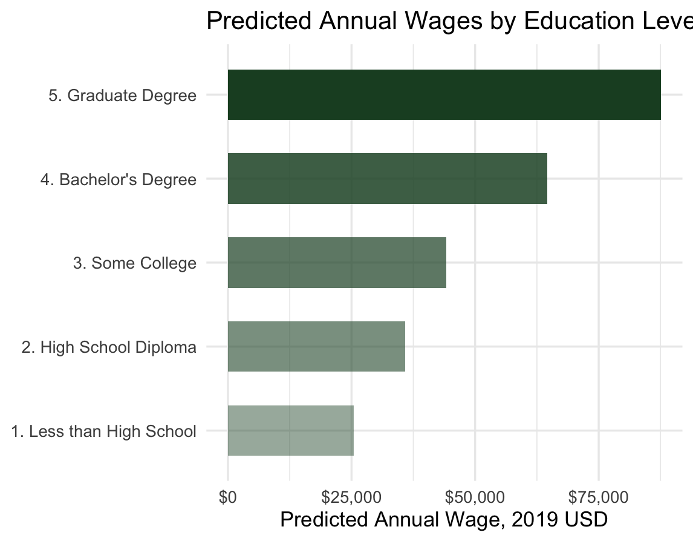
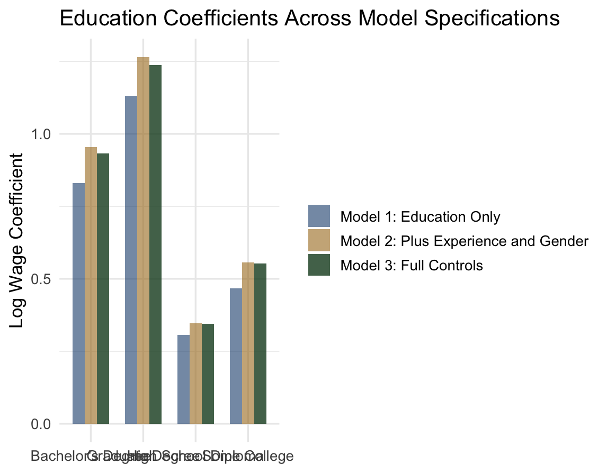
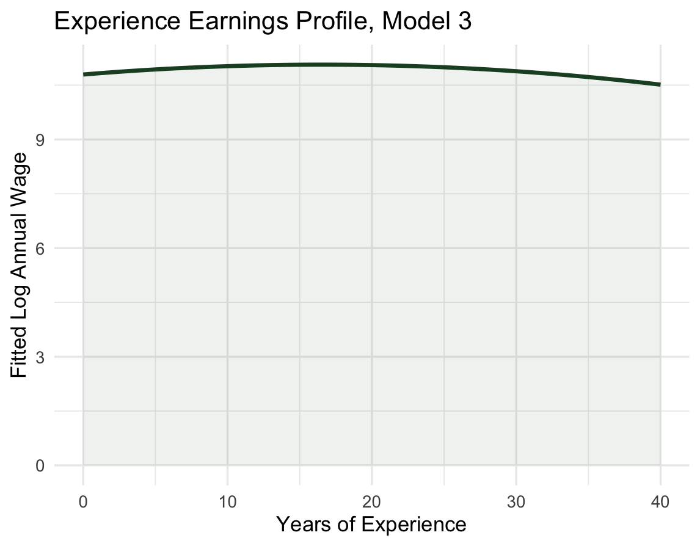
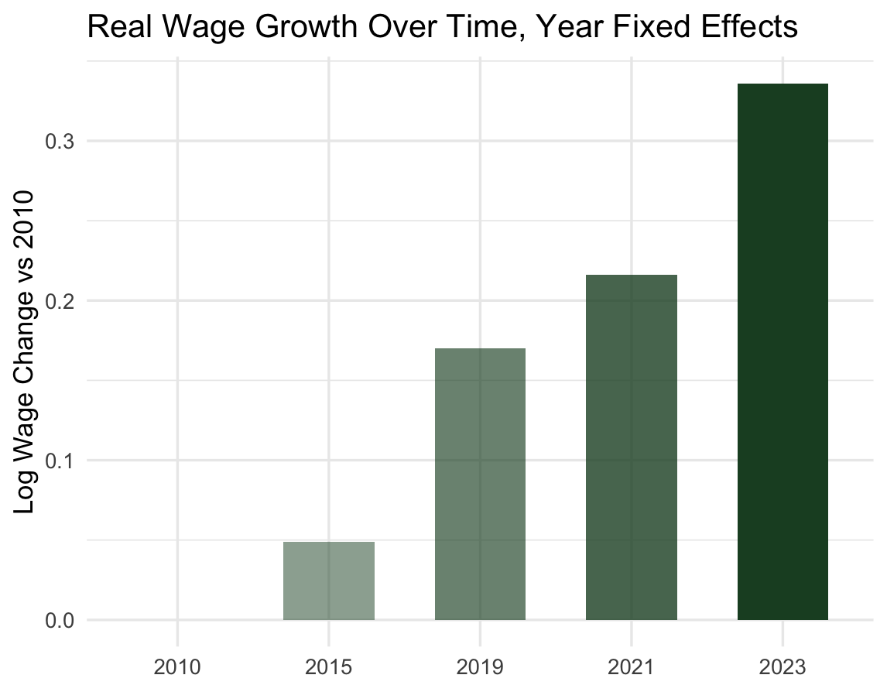

R · OLS Regression · Labor Economics
A Mincer earnings equation estimated on 263,863 full-time workers, showing the wage premium for education, the gender gap, and the experience-earnings control.
My attempt through a Mincer Earning equation to understand what a college degree is worth in the U.S. labor market, and does the premium hold after controlling for experience, gender, and race? The analysis estimates a standard Mincer earnings equation on Current Population Survey microdata spanning 2010 to 2023 (2010, 2015, 2019, 2021, 2023), using log annual wages as the outcome variable and education, experience, and demographic controls as predictors.
The sample is restricted to full-time workers (35+ hours per week) aged 25–64 with positive wage income, resulting 263,863 datapoints across five survey years. Three OLS models are estimated, progressively adding controls to test the strength of the education coefficients.
Relative to workers with less than a high school diploma, Bachelor's degree holders earn approximately 93% more in log-wage terms in the fully controlled model. Graduate degree holders earn 124% more. These coefficients shift by only 1–2 percentage points when adding experience, gender, and race controls. Showing the stability of the premium.
Even a high school diploma carries a meaningful premium, of a 34.4% log-wage advantage over those without one, consistent across all three models.
The female coefficient is −0.325 in Model 3, suggesting a 32.5% unexplained wage gap after controlling for education, experience, race, and year. This is consistent with the broader labor economics literature documenting wage penalties for women that are not explained by human capital differences. Factors like hours flexibility and discrimination are explanations not captured in the model, but likely exist.
The experience coefficient is positive (0.033) and the squared term is negative (−0.001), matching Mincer's original finding of a concave experience-earnings profile. Wages rise with experience but at a diminishing rate, with peak earnings being found around 25–28 years of experience under these estimates.
Black workers face a significant wage penalty of approximately 14.4% relative to White workers with identical education, experience, and year controls. The coefficient for Asian workers was not found not statistically significant. Similar to gender, these are descriptive OLS estimates and do not identify discrimination, but they document unexplained differences like this one.
Year dummy coefficients show steady real wage growth across the sample period: +4.9% by 2015, +17.0% by 2019, +21.6% by 2021, and +33.6% by 2023 relative, indexed to the 2010 reference year. The acceleration post-2019 is explained and matching to the tight pandemic-era labor market and is a period of the largest wage growth in the dataset.
Causality unfortunately lacks in this study. The main limitation is that OLS can't tell us if education leads to higher wages, only that they have some linear movement together. Likely if you pursue a degree, you are already quite driven and intelligent, therefore, maybe you were destined for achieving greater pay even if you had not gone to get an education; we cannot rule out that other factors are driving the higher pay. I reference David Card's study "Using Geographic Variation in College Proximity to Estimate the Return to Schooling" (1995) because he got around this by using distance to college as a stand in for education, since living near a college affects whether someone attends but has no direct effect on their wages. Finding a causal identification strategy similar to Card (1995) would strengthen a study like this. Independent research like this one though has a harder time gathering the data or resources for that kind of causal design. A more in depth study would need to find a similar angle, something that changes a person's odds of getting more education without directly changing their earning potential on its own, and use that to isolate the real effect of what a degree can bring.
Predicted wages, coefficient stability across model specifications, the experience-earnings profile, and year-over-year wage growth.

Source: IPUMS CPS 2010–2023. OLS Mincer earnings equation. Predicted wages = exp(log-wage fitted value) for reference worker profile. Author: Andy Setser.

Source: IPUMS CPS 2010–2023. Reference category: Less than High School. Bars show log-wage coefficient; all estimates significant at p < 0.001. Author: Andy Setser.

Source: IPUMS CPS 2010–2023. Profile computed holding education = Bachelor's Degree, Female = 0, Black = 0, Asian = 0, Year = 2019. Author: Andy Setser.

Source: IPUMS CPS 2010–2023. Year dummies relative to 2010 reference. All coefficients significant at p < 0.001. Author: Andy Setser.
Three nested models. Dependent variable: log annual wage. Reference categories: Less than High School; Year 2010; White; Male.
| Variable | Model 1 Education Only |
Model 2 + Experience & Gender |
Model 3 Full Controls |
|---|---|---|---|
| Education (ref: Less than High School) | |||
| (Intercept) | 10.183*** | 9.822*** | 9.691*** |
| (0.005) | (0.008) | (0.008) | |
| High School Diploma | 0.307*** | 0.347*** | 0.344*** |
| (0.006) | (0.006) | (0.006) | |
| Some College | 0.467*** | 0.556*** | 0.553*** |
| (0.006) | (0.006) | (0.006) | |
| Bachelor's Degree | 0.830*** | 0.954*** | 0.933*** |
| (0.006) | (0.006) | (0.006) | |
| Graduate Degree | 1.132*** | 1.265*** | 1.237*** |
| (0.007) | (0.006) | (0.006) | |
| Experience | |||
| Experience (years) | — | 0.032*** | 0.033*** |
| (0.001) | (0.001) | ||
| Experience Squared | — | −0.000*** | −0.001*** |
| (0.000) | (0.000) | ||
| Gender | |||
| Female | — | −0.332*** | −0.325*** |
| (0.003) | (0.003) | ||
| Race (ref: White) | |||
| Black | — | — | −0.144*** |
| (0.004) | |||
| Asian | — | — | 0.007 |
| (0.005) | |||
| Year Fixed Effects (ref: 2010) | |||
| Year: 2015 | — | — | 0.049*** |
| (0.004) | |||
| Year: 2019 | — | — | 0.170*** |
| (0.004) | |||
| Year: 2021 | — | — | 0.216*** |
| (0.004) | |||
| Year: 2023 | — | — | 0.336*** |
| (0.004) | |||
| Model Fit | |||
| Observations | 263,863 | 263,863 | 263,863 |
| R² | 0.172 | 0.237 | 0.262 |
| Adjusted R² | 0.172 | 0.237 | 0.262 |
Standard errors in parentheses. Significance: + p < 0.1 | * p < 0.05 | ** p < 0.01 | *** p < 0.001
Sample: Full-time workers (UHRSWORKT ≥ 35), ages 25–64, positive wage income. Years: 2010, 2015, 2019, 2021, 2023. Dependent variable: log(INCWAGE).
Fully reproducible analysis. Data from IPUMS CPS; register and extract at ipums.org/cps.
library(tidyverse)
library(modelsummary)
library(scales)
library(viridis)
cps <- read_csv("cps_00001.csv")
cps_clean <- cps |> filter(AGE >= 25, AGE <= 64) |> filter(INCWAGE > 0, INCWAGE < 99999999) |> filter(UHRSWORKT >= 35, UHRSWORKT < 997) |> mutate(education = case_when(EDUC < 73 ~ "1. Less than High School", EDUC == 73 ~ "2. High School Diploma", EDUC %in% c(80,81,90,91,92) ~ "3. Some College", EDUC == 111 ~ "4. Bachelor's Degree", EDUC >= 123 ~ "5. Graduate Degree"), gender = if_else(SEX == 1, "Male", "Female"), years_of_school = case_when(EDUC < 73 ~ 10, EDUC == 73 ~ 12, EDUC %in% c(80,81,90,91,92) ~ 14, EDUC == 111 ~ 16, EDUC >= 123 ~ 18), experience = AGE - years_of_school - 6, experience_sq = experience^2, log_wage = log(INCWAGE), female = if_else(SEX == 2, 1, 0), black = if_else(RACE == 200, 1, 0), asian = if_else(RACE == 651, 1, 0), year_2015 = if_else(YEAR == 2015, 1, 0), year_2019 = if_else(YEAR == 2019, 1, 0), year_2021 = if_else(YEAR == 2021, 1, 0), year_2023 = if_else(YEAR == 2023, 1, 0)) |> filter(!is.na(education), experience >= 0)
# three models, each adding more controls than the one before it
model1 <- lm(log_wage ~ education, data = cps_clean)
model2 <- lm(log_wage ~ education + experience + experience_sq + female, data = cps_clean)
model3 <- lm(log_wage ~ education + experience + experience_sq + female + black + asian + year_2015 + year_2019 + year_2021 + year_2023, data = cps_clean)
modelsummary(list("Model 1" = model1, "Model 2" = model2, "Model 3" = model3), stars = TRUE, fmt = 3)
ref_worker <- data.frame(education = c("1. Less than High School", "2. High School Diploma", "3. Some College", "4. Bachelor's Degree", "5. Graduate Degree"), experience = 10, experience_sq = 100, female = 0, black = 0, asian = 0, year_2015 = 0, year_2019 = 1, year_2021 = 0, year_2023 = 0)
ref_worker$predicted_wage <- exp(predict(model3, newdata = ref_worker))
ref_worker |> ggplot(aes(x = reorder(education, predicted_wage), y = predicted_wage, fill = education)) + geom_col(width = 0.6, show.legend = FALSE) + scale_fill_manual(values = c("#1E4D2B73", "#1E4D2B94", "#1E4D2BB3", "#1E4D2BD6", "#1E4D2B")) + coord_flip() + scale_y_continuous(labels = dollar_format()) + labs(title = "Predicted Annual Wages by Education Level", x = NULL, y = "Predicted Annual Wage, 2019 USD") + theme_minimal(base_size = 13)
ggsave("fig1_wages.png", width = 9, height = 4.5, dpi = 200)
# same four education levels, shown across all three models so you can see how stable the estimates are
coef_data <- tibble(education = rep(c("High School Diploma", "Some College", "Bachelor's Degree", "Graduate Degree"), 3), model = rep(c("Model 1: Education Only", "Model 2: Plus Experience and Gender", "Model 3: Full Controls"), each = 4), coefficient = c(0.307, 0.467, 0.830, 1.132, 0.347, 0.556, 0.954, 1.265, 0.344, 0.553, 0.933, 1.237))
coef_data |> ggplot(aes(x = education, y = coefficient, fill = model)) + geom_col(position = "dodge", width = 0.7) + scale_fill_manual(values = c("#1A4A7A99", "#A8791F99", "#1E4D2BD1")) + labs(title = "Education Coefficients Across Model Specifications", x = NULL, y = "Log Wage Coefficient", fill = NULL) + theme_minimal(base_size = 13)
ggsave("fig2_coefs.png", width = 9, height = 4.5, dpi = 200)
exp_profile <- tibble(experience = 0:40) |> mutate(log_wage = 9.691 + 0.933 + 0.033 * experience - 0.001 * experience^2 + 0.170)
exp_profile |> ggplot(aes(x = experience, y = log_wage)) + geom_line(color = "#1E4D2B", linewidth = 1.2) + geom_area(fill = "#1E4D2B12") + labs(title = "Experience Earnings Profile, Model 3", x = "Years of Experience", y = "Fitted Log Annual Wage") + theme_minimal(base_size = 13)
ggsave("fig3_experience.png", width = 9, height = 4.5, dpi = 200)
year_data <- tibble(year = c("2010", "2015", "2019", "2021", "2023"), change = c(0, 0.049, 0.170, 0.216, 0.336))
year_data |> ggplot(aes(x = year, y = change, fill = year)) + geom_col(width = 0.6, show.legend = FALSE) + scale_fill_manual(values = c("#90909099", "#1E4D2B80", "#1E4D2BA6", "#1E4D2BCC", "#1E4D2B")) + labs(title = "Real Wage Growth Over Time, Year Fixed Effects", x = NULL, y = "Log Wage Change vs 2010") + theme_minimal(base_size = 13)
ggsave("fig4_growth.png", width = 9, height = 4.5, dpi = 200)
Sarah Flood, Miriam King, Renae Rodgers, Steven Ruggles, J. Robert Warren, Daniel Backman, Etienne Breton, Grace Cooper, Julia A. Rivera Drew, Stephanie Richards, David Van Riper, and Kari C.W. Williams. IPUMS CPS: Version 13.0 [dataset]. Minneapolis, MN: IPUMS, 2025. https://doi.org/10.18128/D030.V13.0